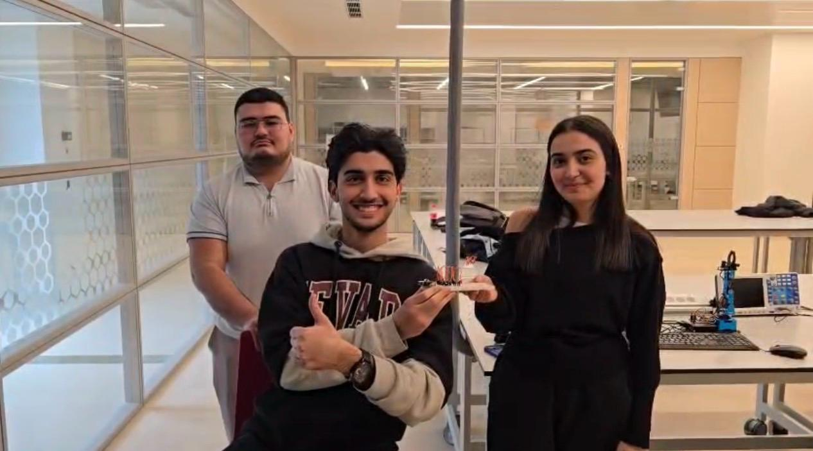
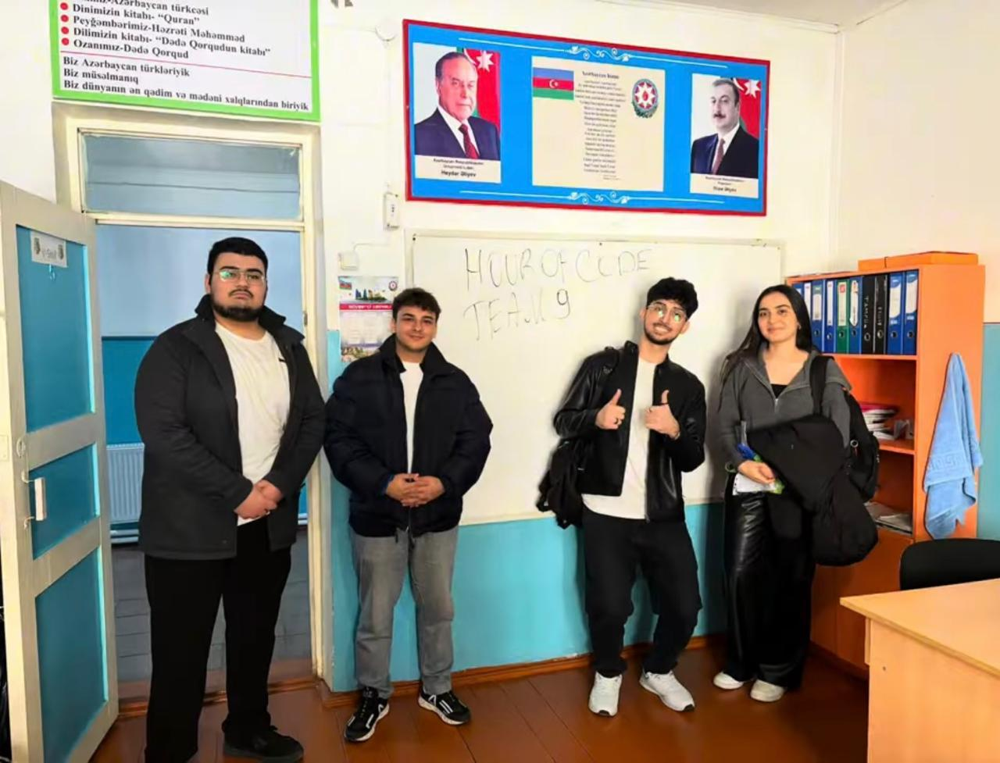
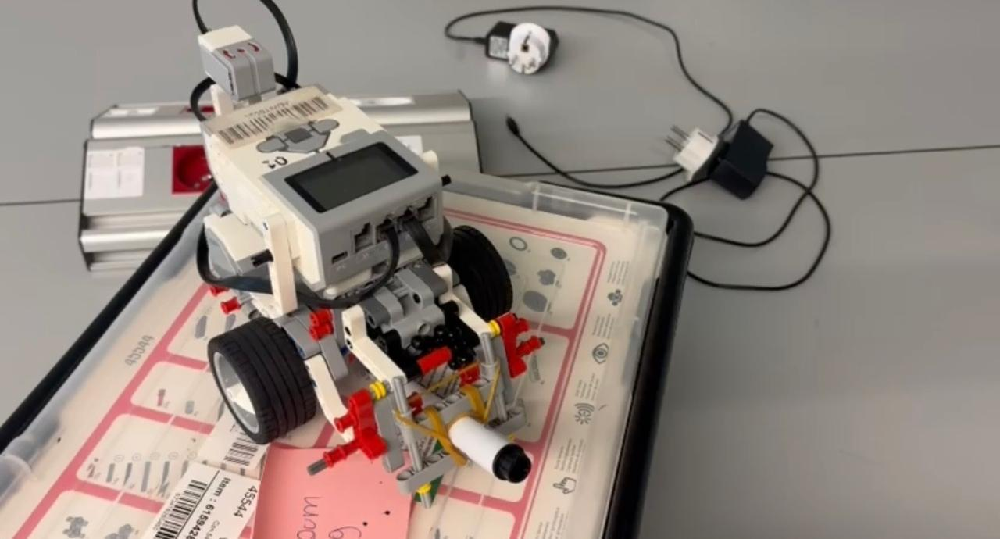

My Projects
Project 1
As a team, we constructed and tested basic logic gate circuits on the breadboard using resistors, transistors, pushbuttons, LEDs, and jumper wires. We followed the circuit schemes, placed the components correctly, and checked all connections before testing. After that, we tested the outputs of the gates to see whether they worked properly. We also recorded the construction process and final results for the project video.

Project 2
As a team, we organized and conducted an Hour of Code event for the community. We prepared the teaching process beforehand, explained basic coding and algorithm concepts in a simple way, and used engaging activities to involve the participants. During the session, we interacted with the participants, guided them through the tasks, and made sure they understood the main idea of the activity. We also recorded the teaching process, participants’ involvement, and final moments of the event for the project video.

Project 3
As a team, we built and programmed a LEGO Mindstorms EV3 robot to draw an eight-pointed star and a circle on paper. We prepared the robot model, attached the gyro sensor and marker holder, and tested how the robot moved on the surface. We wrote and adjusted the program so the robot could follow the drawing steps more accurately. During the lab sessions, we tested the robot several times, fixed movement and connection issues, and improved the final output. We also recorded the construction process, program testing, and the robot’s final drawings for the project video.
